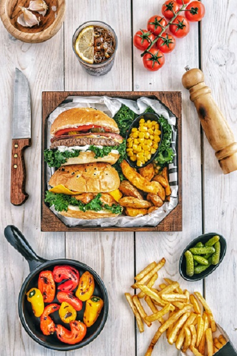

|
|
▢1 ચમચી તેલ
▢½ ચમચી માખણ
▢½ ચમચી આદુ, સમારેલું
▢2 લીલા મરચાં, સમારેલા
▢12-15 ફ્રેન્ચ બીન્સ, સમારેલા
▢1 વિન્ટર ગાજર, સમારેલ
▢2-3 મોટા બટેટા, બાફેલા, છૂંદેલા
▢½ ટીસ્પૂન લાલ મરચું પાવડર
▢¼ ટીસ્પૂન ગરમ મસાલો
સ્વાદ પ્રમાણે મીઠું
▢½ ટીસ્પૂન આદુ લસણની પેસ્ટ
▢2 ચમચી કોથમીર ઝીણી સમારેલી
બેટરી માટે
▢½ કપ તમામ હેતુનો લોટ
▢સ્વાદ પ્રમાણે મીઠું
▢જરૂર મુજબ પાણી
▢બ્રેડક્રમ્સમાં કોટિંગ માટે
▢1 કપ તાજા બ્રેડક્રમ્સ
▢2-3 ચમચી પોહા, છીણ
▢શૅલો ફ્રાય ટીક્કી માટે
▢½ ચમચી ઓઈ, તેલ
▢½ ચમચી માખણ
▢બર્ગર બન્સ શેકવા માટે
▢1 ચમચી માખણ
▢વેજ બર્ગર ટોપિંગ માટે
▢4 તલ બર્ગર બન - આખા ઘઉં અથવા સાદા અથવા બહુ અનાજ
▢1 ચમચી મેયોનેઝ
▢4 થી 5 લેટીસના પાન
▢સ્વાદ પ્રમાણે મીઠું
▢1 નાનું થી મધ્યમ ટામેટા, પાતળું કાપેલું
▢1 નાની થી મધ્યમ ડુંગળી, પાતળી કાતરી, શેકેલી
▢2 ચીઝના ટુકડા
▢2-3 કાળા અથવા લીલા ઓલિવ
Read more
|
|
એક પેનમાં તેલ, માખણ, ઝીણું સમારેલું આદુ, લીલા મરચાં નાખીને બરાબર સાંતળો. સમારેલા શાકભાજી ઉમેરો અને નરમ થાય ત્યાં સુધી તેને સારી રીતે સાંતળો. બાફેલા બટાકાને મેશ કરો અને પેનમાં ઉમેરો સારી રીતે મિક્સ કરો. તેમાં લાલ મરચું પાવડર, ગરમ મસાલો, સ્વાદાનુસાર મીઠું અને આદુ લસણની પેસ્ટ નાખીને બધું બરાબર મિક્સ કરો. હવે તેમાં સમારેલી કોથમીર ઉમેરીને બરાબર મિક્ષ કરી લો. મિશ્રણને બાઉલમાં કાઢી લો અને તેને 10 મિનિટ માટે રેફ્રિજરેટરમાં રાખો મિશ્રણને રેફ્રિજરેટરમાંથી કાઢી લો અને ટિક્કી બનાવવાનું શરૂ કરો. કૂકી કટરની મદદથી અથવા તમારા હાથથી અને તેને યોગ્ય આકાર આપો. હવે તેમાં એક ટિક્કી ઉમેરો, સૌપ્રથમ તેને સ્લરીથી કોટ કરો અને પછી બ્રેડનો ભૂકો નાખીને સારી રીતે કોટ કરો. સખત મારપીટ માટે
Step2:
એક બાઉલમાં, સ્લરી બનાવવા માટે તમામ હેતુનો લોટ, મીઠું અને પાણી ઉમેરો. બ્રેડ ક્રમ્બ કોટિંગ માટે
Step3:
બીજા બાઉલમાં તાજા બ્રેડ ક્રમ્બ્સ, ક્રશ કરેલા પોહા ઉમેરીને બરાબર મિક્ષ કરી લો. શૅલો ફ્રાય ટીક્કી માટે
Step4:
એક કડાઈમાં તેલ અને માખણ ઉમેરો અને ટિક્કીને સરસ ગોલ્ડન બ્રાઉન રંગની અને ક્રિસ્પી થાય ત્યાં સુધી શેલો ફ્રાય કરો. રોસ્ટિંગ બર્ગર બન્સ માટે
Step5:
બન્સને કટ કરો અને બીજા પેનમાં બન્સને લાઈટ બ્રાઉન રંગના થાય ત્યાં સુધી શેકો. માખણ ઉમેરો અને ડુંગળીને રિંગ્સમાં કાપી લો અને તે જ તવા પર ડુંગળીને ગ્રીલ કરો. વેજ બર્ગર ટોપિંગ્સ માટે
Step6:
બ્રેડનો નીચેનો અડધો ભાગ લો અને તેના પર મેયોનીઝ લગાવો. હવે તેના પર લેટીસ મૂકો અને થોડું મીઠું છાંટો પછી ટામેટાની સ્લાઈસ ઉમેરો અને મીઠું અને મરી છાંટો. તેના પર ટિક્કી મૂકો અને શેકેલી ડુંગળી ફરીથી ઉપર થોડી વધુ મેયોનેઝ ઉમેરો અને છેલ્લે ચીઝ સ્લાઈસ ઉમેરો અને બર્ગરને બન સાથે બંધ કરો અને લીલા અથવા કાળા ઓલિવ સાથે ટૂથપીક દાખલ કરો. તેને ફ્રેન્ચ ફ્રાઈસ અને મેયોનીઝ સાથે સર્વ કરો.